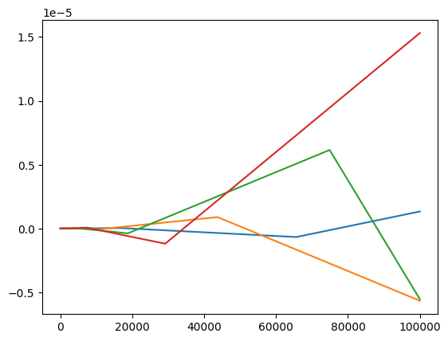
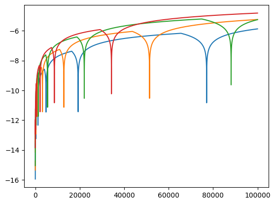
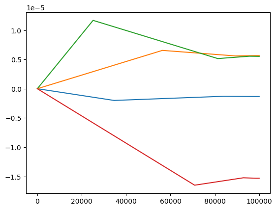

print(f"{0.1+0.1+0.1:.60f}")
print(f"{0.3:.60f}")0.300000000000000044408920985006261616945266723632812500000000
0.299999999999999988897769753748434595763683319091796875000000This is a topic that breaks my head each time I try to understand it. This is a summary of what I know and what I don’t.
Floating point is a way to represent scientific notation in a computer. Its purpose is to be able to represent both values that are very very small and values that are very very big.
Internal representation is a tripplet of sign, exponent and a significand (also called fraction or mantissa, represents the significant digits). On most current computers, the used standard is called IEEE 754. Its double-precision format, “binary64”, has 1 bit for the sign, 11 bits for the exponent and 53 bits for the significand.
Since there are possibly many ways to decompose a number into such triplet (for example, the number 12 can be represented by either \(12 \times 2^0\), \(3 \times 2^2\) or \(1.5 \times 2^3\)), the numbers are stored in a normalized form. That means that the significand represents digits after a decimal point after a \(1\). So each floating point number is represented as \((-1)^{sign} \times 1.fraction \times 2^{exponent}\). The purpose of this normalization is to maximize efficiency and precision.
Since the significand has a finite number of bits available, some numbers are simply not representable. Famously, the number \(0.1\) is not perfectly representable, because in base 2 one would need infinite digits of the significand to represent it perfectly. It is similar to the number \(\frac{1}{3}\) not being perfectly representable in base 10 with finite number of significant digits. For example, with 5 significant (decimal) digits, the best you could do is to represent \(\frac{1}{3}\) by \(0.33333\).
When this happens (the number entered is not perfectly representable), the floating point standard performs rounding. It represents the entered number as a close representable number. The direction of rounding can be either toward zero, to the nearest representable number, toward positive infinity or toward negative infinity. So, the code 0.1 + 0.1 + 0.1 == 0.3 evaluates to False, because the addition on the left-hand side is rounded to a different number than what the number 0.3 is represented with.
print(f"{0.1+0.1+0.1:.60f}")
print(f"{0.3:.60f}")0.300000000000000044408920985006261616945266723632812500000000
0.299999999999999988897769753748434595763683319091796875000000sys.float_infoIn Python, the parameters of floating point arithmetics on a particular machine can be found using the attribute float_info of the module sys. See the docs. For example, we can see that the rounding mode on my computer is “toward nearest”.
import sys
print(sys.float_info)sys.float_info(max=1.7976931348623157e+308, max_exp=1024, max_10_exp=308, min=2.2250738585072014e-308, min_exp=-1021, min_10_exp=-307, dig=15, mant_dig=53, epsilon=2.220446049250313e-16, radix=2, rounds=1)Notice the value dig, “the maximum number of decimal digits that can be faithfully represented in a float”. To me, it is surprisingly small. On my computer, any number that has 15 or less significant digits, can be converted from str to float and back without change of value. But numbers with more than 15 significant digits aren’t guarranteed to have this property:
s = "3.14159265358979"
print(s)
print(f"{float(s):.60}")
print(str(float(s)))
print("----------")
s = "0.000000314159265358979"
print(s)
print(f"{float(s):.60}")
print(str(float(s)))3.14159265358979
3.141592653589790007373494518105871975421905517578125
3.14159265358979
----------
0.000000314159265358979
3.14159265358979004489366594968235979479231900768354535102844e-07
3.14159265358979e-07s = "9.876543210123459"
print(s)
print(f"{float(s):.60}")
print(str(float(s)))9.876543210123459
9.8765432101234598150085730594582855701446533203125
9.87654321012346Let’s look at this code:
x = 0
for _ in range(10):
x += 0.1
print(f"{x:.55f}")0.1000000000000000055511151231257827021181583404541015625
0.2000000000000000111022302462515654042363166809082031250
0.3000000000000000444089209850062616169452667236328125000
0.4000000000000000222044604925031308084726333618164062500
0.5000000000000000000000000000000000000000000000000000000
0.5999999999999999777955395074968691915273666381835937500
0.6999999999999999555910790149937383830547332763671875000
0.7999999999999999333866185224906075745820999145507812500
0.8999999999999999111821580299874767661094665527343750000
0.9999999999999998889776975374843459576368331909179687500The rounding errors are sometimes positive, sometimes negative. All in all, I think they are basicaly random. But they can accumulate over a large amount of operations. This code should test this.
To explain this code: It is obviously impossible to measure the rounding error of numbers that aren’t perfectly representable, like 0.1. Because I can’t represent the actual value to compare the floating point number with. But integers up to 10^sys.float_info[max_10_exp] are perfectly representable. I’m using this fact and measuring the rounding error after each 10th iteration.
from matplotlib import pyplot as plt
import numpy as npw, x, y, z = 0, 0, 0, 0
errors_1, errors_3, errors_7, errors_9 = [], [], [], []
for i in range(1, 1_000_001):
w += 0.1
x += 0.3
y += 0.7
z += 0.9
if i != 1 and i % 10 == 0:
errors_1.append(w - i * 0.1)
errors_3.append(x - i * 0.3)
errors_7.append(y - i * 0.7)
errors_9.append(z - i * 0.9)plt.plot(errors_1)
plt.plot(errors_3)
plt.plot(errors_7)
plt.plot(errors_9)
plt.plot(np.log10(np.abs(np.array(errors_1))))
plt.plot(np.log10(np.abs(np.array(errors_3))))
plt.plot(np.log10(np.abs(np.array(errors_7))))
plt.plot(np.log10(np.abs(np.array(errors_9))))C:\Users\marti\AppData\Local\Temp\ipykernel_7900\2778079877.py:1: RuntimeWarning: divide by zero encountered in log10
plt.plot(np.log10(np.abs(np.array(errors_1))))
C:\Users\marti\AppData\Local\Temp\ipykernel_7900\2778079877.py:2: RuntimeWarning: divide by zero encountered in log10
plt.plot(np.log10(np.abs(np.array(errors_3))))
C:\Users\marti\AppData\Local\Temp\ipykernel_7900\2778079877.py:3: RuntimeWarning: divide by zero encountered in log10
plt.plot(np.log10(np.abs(np.array(errors_7))))
C:\Users\marti\AppData\Local\Temp\ipykernel_7900\2778079877.py:4: RuntimeWarning: divide by zero encountered in log10
plt.plot(np.log10(np.abs(np.array(errors_9))))
We can see the the magnitude of the error always fluctuates around zero, and sometimes is exactly zero (hence the errors RuntimeWarning: divide by zero encountered in log10), but the magnitude of this fluctuation generally increases with increasing number of floating point operations.
However, the situation is a bit different when applied to subtracting. The errors are always in the same direction and their increase in magnitude is a bit questionable. So I’m actually confused.
num_iters = 1_000_000
w, x, y, z = (
int(num_iters * 0.1),
int(num_iters * 0.3),
int(num_iters * 0.7),
int(num_iters * 0.9),
)
errors_1, errors_3, errors_7, errors_9 = [], [], [], []
for i in range(1, num_iters + 1):
w -= 0.1
x -= 0.3
y -= 0.7
z -= 0.9
if i != 1 and i % 10 == 0:
errors_1.append(w - (int(num_iters * 0.1) - i * 0.1))
errors_3.append(x - (int(num_iters * 0.3) - i * 0.3))
errors_7.append(y - (int(num_iters * 0.7) - i * 0.7))
errors_9.append(z - (int(num_iters * 0.9) - i * 0.9))plt.plot(errors_1)
plt.plot(errors_3)
plt.plot(errors_7)
plt.plot(errors_9)
plt.plot(np.log10(np.abs(np.array(errors_1))))
plt.plot(np.log10(np.abs(np.array(errors_3))))
plt.plot(np.log10(np.abs(np.array(errors_7))))
plt.plot(np.log10(np.abs(np.array(errors_9))))